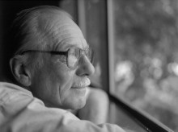

Please note: the AAS Obituaries are temporarily being hosted on this website while their full content is being ingested into the PubPub publishing platform newly adopted by the Bulletin of the American Astronomical Society. When the migration is complete, your existing links will take you to the final, migrated content. Contact peter.williams@aas.org with any questions.
Leif J. Robinson (1939-2011)
Leif J. Robinson, Editor in Chief of Sky & Telescope magazine from 1980 to 2000, died at his home in Costa Rica on 27 February 2011. Robinson’s editorial stewardship, which emphasized journalistic accuracy and integrity, helped boost the magazine’s profile and circulation among both amateur and professional astronomers.
Robinson was born on 21 May 1939, in Connecticut. He moved to Southern California in 1954, where he joined the Los Angeles Astronomical Society and attended UCLA. Following the appearance of his first article in Sky & Telescope, in 1960, he became a frequent contributor on a host of topics related to amateur astronomy, variable stars, and lunar cartography. A Sky & Telescope press release reports that, while visiting his grandparents in Connecticut in 1962, Robinson received a telegram offering him an editorial position at the magazine. He initially planned to reject the offer in order to complete his studies at UCLA, but changed his mind after speaking with Sky & Telescope office staffer Caroline Nason, whom he would later marry. Robinson advanced through several editorial positions until 1980, when he was named the magazine’s third Editor in Chief (after Charles Federer and Joseph Ashbrook).
In person, Robinson was gregarious, quick-witted, and a fascinating conversation partner. (I completed several Sky & Telescope book projects under his tenure.) But his tell-it-like-it-is ire would occasionally reveal itself in the pages of the magazine when confronted with some case of institutional illogic or spurious science. In a January 1999 opinion piece, provocatively titled "Stupidity Squared,” Robinson fumed against congressional cancellation of the Superconducting Super Collider, then pilloried the International Space Station, which he deemed a "grossly over-budget, overpriced, $25 to $50 billion flying fiasco." Another op-ed, "Astronomers Are Jerks," lambastes colleagues who needlessly alarmed the public over a mile-wide asteroid projected to possibly strike Earth in 2028; follow-up calculations slashed the impact risk to “zero,” a flip-flop that Robinson found detrimental to the public’s perception of science. In October 1990, he sounded an optimistic (and prophetic) note following reportage of the Hubble Space Telescope’s misshapen primary mirror: “Time should soften today's public image of HST, for I truly believe the telescope will hit many home runs.”
Robinson was a tireless advocate of professional-amateur collaborations in the search for asteroids, comets, and supernovae, especially with the rapid advancement of digital imaging and computer technology. “I was one of the few people to walk in both communities with equal facility,” he said.
After authoring more than 250 articles and editing many more, Robinson retired from Sky & Telescope in 2000. But he continued to pen the magazine's popular “50 & 25 Years Ago” column and deliver talks to amateur astronomy organizations. From 2001 to 2005, he served on the Board of Directors of the Astronomical Society of the Pacific. He also authored the book Outdoor Optics, a compendium of practical information about binoculars. Robinson was an expert birdwatcher, an avocation that garnered much of his attention during his retirement years. Asteroid 1983 AR is named in his honor. Robinson is survived by his second wife “Ollie,” son Leif, Jr., and daughter Cara.
Celebrating the 60th anniversary of his beloved magazine in November 2001, Robinson summed up his take on the advancement of cosmic studies: "Astronomy two generations ago was simple, but only in retrospect. … As I finish this piece while listening to Elgar's Enigma Variations, I can't help but giggle at how many big unknowns surely await discovery!"
Photo: Sky & Telescope/Dennis DiCicco
Obituary written by: Alan Hirshfeld (University of Massachusetts, Dartmouth)
Additional links:
BAAS Citation: BAAS, 2017, 49, 003